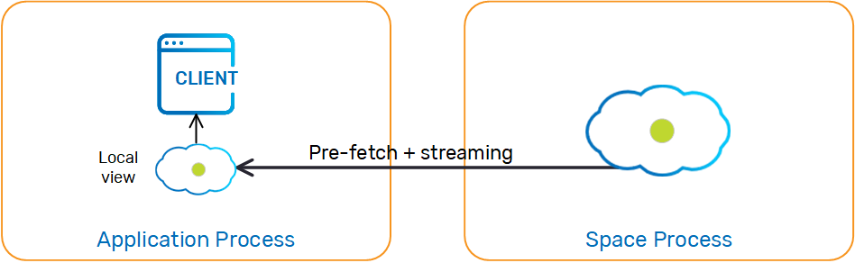

A local view is a read-only, client-side Space that maintains a subset of the master Space's data, allowing the client to read distributed data without performing any remote calls or data serialization.
Data is streamed into the client application's local view based on predefined criteria (a collection of SQLQuery objects) specified by the client when the local view is created.
During the local view initialization, data is loaded into the client's memory based on the view criteria. Afterwards, the local view is continuously updated by the master Space asynchronously; any operation executed on the master Space that affects an entry matching the view criteria is automatically propagated to the client.

The following operations are supported (they are served by the local view). The master Space is not accessed when calling these:
read , readMultiple , asyncRead , count , using Template Matching, Id Queries or SQLQueryThe following operations are not supported when using local view, and should be performed using a regular Space proxy:
write, writeMultiple, update, updateMultiple, execute)clean, clear, take, takeById, takeMultiple, asyncTake, etc.)Creating a local view is similar to creating a GigaSpace instance, except that the Space is wrapped with a local view before exposing it as a GigaSpace. The local view can be configured via Spring using LocalViewSpaceFactoryBean or the <os-core:local-view> Spring tag, or in code using LocalViewSpaceConfigurer. For example:
<os-core:space-proxy id="space" space-name="mySpace"/>
<os-core:local-view id="localViewSpace" space="space">
<os-core:properties>
<props>
<prop key="space-config.engine.memory_usage.write_only_block_percentage">88</prop>
<prop key="space-config.engine.memory_usage.write_only_check_percentage">86</prop>
</props>
</os-core:properties>
<os-core:view-query class="com.example.Message1" where="processed = true"/>
<os-core:view-query class="com.example.Message2" where="priority > 3"/>
</os-core:local-view>
<os-core:giga-space id="localView" space="localViewSpace"/>
<bean id="space" class="org.openspaces.core.space.SpaceProxyFactoryBean">
<property name="name" value="space" />
</bean>
<bean id="viewSpace" class="org.openspaces.core.space.cache.LocalViewSpaceFactoryBean">
<property name="space" ref="space" />
<property name="localViews">
<list>
<bean class="com.j_spaces.core.client.view.View">
<constructor-arg index="0" value="com.example.Message1" />
<constructor-arg index="1" value="processed = true" />
</bean>
<bean class="com.j_spaces.core.client.view.View">
<constructor-arg index="0" value="com.example.Message2" />
<constructor-arg index="1" value="priority > 3" />
</bean>
</list>
</property>
</bean>
// Initialize remote space configurer:
SpaceProxyConfigurer urlConfigurer = new SpaceProxyConfigurer("mySpace");
// Initialize local view configurer
LocalViewSpaceConfigurer localViewConfigurer = new LocalViewSpaceConfigurer(urlConfigurer)
.batchSize(1000)
.batchTimeout(100)
.maxDisconnectionDuration(1000*60*60)
.addProperty("space-config.engine.memory_usage.high_watermark_percentage", "90")
.addProperty("space-config.engine.memory_usage.write_only_block_percentage", "88")
.addProperty("space-config.engine.memory_usage.write_only_check_percentage", "86")
.addProperty("space-config.engine.memory_usage.retry_count", "5")
.addProperty("space-config.engine.memory_usage.explicit", "false")
.addProperty("space-config.engine.memory_usage.retry_yield_time", "50")
.addViewQuery(new SQLQuery(com.example.Message1.class, "processed = true"))
.addViewQuery(new SQLQuery(com.example.Message2.class, "priority > 3"));
// Create local view:
GigaSpace localView = new GigaSpaceConfigurer(localViewConfigurer).gigaSpace();
Data is never evicted from the local view (the cache policy is hardwired to ALL_IN_CACHE). Therefore, specifying a criteria that retrieves large amounts of data from the master Space can cause the client to run out of memory.
It can be problematic to run multiple local view instances (for different master Spaces) within the same client without allocating reasonable headroom for the local view to operate. This will manifest in MemoryShortageException being thrown sporadically.
The main reason for this is the interdependency between all the co-located local views regarding the utilized memory. The MemoryShortageException is thrown when the JVM's total utilized memory is above a certain threshold (not for a specific local view's utilized memory), therefore an "over-utilized" local view may affect other local views running within the same client. The recommended approach to ensure deterministic behavior is to provide some extra headroom for the client JVM heap size, to accommodate the potential total amount of objects stored by all the local views.
Example
Client X runs two local view instances, LV1 for master Space A matching 100,000 objects, and LV2 for master Space B matching 100 objects. Some other clients write data to Space A. LV1 matches these written/updated objects, therefore LV1 gets these objects automatically (via notifications) and updates its view. At some point, other clients write data into Space B. LV2 matches these objects, therefore it automatically has these objects propagated locally.
If the JVM running client X's available memory exceeds the write_only_block_percentage threshold, a MemoryShortageException is thrown when the listener on the client side (for LV1 or LV2) that receives the notifications with the new/updated objects tries to write them to the relevant local view. In this case, the client might not even perform an explicit read. It will have a "phantom" MemoryShortageException thrown that is a result of new/updated objects written to the Space by other clients (or by itself). Even if LV2 is cleared somehow (as a result of objects taken from Space B), a MemoryShortageException is thrown on the client side when new objects are written to Space A.
The local view uses replication instead of notifications to synchronize with the master Space, because replication provides higher reliability than notification. In general, this is an implementation detail that should not concern the user, except for the following cases:
In these cases, the local view automatically reverts to notification-based synchronization.
The following properties can be configured on the Space side, and will affect all the local views that are created on top of that Space.
| Property | Description | Default Value |
|---|---|---|
| cluster-config.groups.group.repl-policy.redo-log-local-view-capacity | Specifies the total capacity of replication packets the redo log can hold for a local view replication target | 150000 |
| cluster-config.groups.group.repl-policy.redo-log-local-view-recovery-capacity | Specifies the total capacity of replication packets the redo log can hold for a local view replication target while the local view is in recovery state (initial load process) | 1000000 |
| cluster-config.groups.group.repl-policy.local-view-max-disconnection-time | Specifies the maximum amount of time (in milliseconds) the space will wait for the local view replication target before it is considered disconnected, after which the target will be dropped. | 300000 |
When configuring the redo log memory capacity for the local view, it needs to be smaller than the general redo log memory capacity (to prevent creating swap files).
If local view synchronization is done using notifications, the round-trip-time can be configured using the space-config.dist-cache.events.lease-renew.round-trip-time custom property. For more information about this setting refer to Session Based Messaging API.
Changes in the server are grouped and sent to the client in batches. The following configuration settings controls synchronization batching:
Setting lower values for batch size and timeout reduce data staleness but increase network load, and vice versa.
Batch settings can be configured using LocalViewSpaceFactoryBean for Spring, or using LocalViewSpaceConfigurer at runtime. For example:
<os-core:local-view id="localViewSpace" space="space" batch-size="1000" batch-timeout="100">
<os-core:view-query class="com.example.Message1" where="processed = true"/>
</os-core:local-view>
The local view requires a constant connection to the master Space in order to keep the data synchronized. Short, intermittent disconnections may occur that don't significantly affect data syncing. In this case, the client application can continue to read data from the local view. A lengthy disconnection means the data in the local view isn't synced with the master Space, so the local view doesn't accept operations from the client and instead throws an exception.
The max-disconnection-duration parameter defines for how long the local view can be disconnected from the master Space before the view is no longer viable.
The local view connection can be in any of the following states:
When the connection between a local view and remote master Space is disrupted, the local view starts trying to reconnect with the remote Space. As long as the disconnection period is shorter than the max-disconnection-duration value, querying the local view will return a result, although it isn't guaranteed to be in sync with the master Space. If the disconnection period exceeds the max-disconnection-duration value, the local view cannot be queried.
You can configure the max-disconnection-duration parameter using LocalViewSpaceFactoryBean for Spring, or using LocalViewSpaceConfigurer at runtime (the default is 1 minute). For example:
<os-core:local-view id="localViewSpace" space="space" max-disconnection-duration="60000">
<os-core:view-query class="com.example.Message1" where="processed = true"/>
</os-core:local-view>
When the connection to the remote master Space is restored, the local view reloads all its data from the master Space (this is the same behavior as in the initialization process) before restoring the state to active. This ensures that the local view is consistent when it is accessed.
When the synchronization is replication-based (default), the local view is resilient to failover because if a primary Space fails and a backup Space replaces it before the maximum disconnection duration expires, the local view remains intact during the failover process. When the synchronization is notification-based, this is not guaranteed because notifications may be lost during the failover process.
You can do the following using the LocalViewMonitor interface:
The code snippet below demonstrates how to use the Local View Monitor to read the local view connection state:
// Initialize remote space configurer:
GigaSpaceConfigurer gigaSpaceConfigurer = new GigaSpaceConfigurer("mySpace");
// Initialize local view configurer
LocalViewSpaceConfigurer localViewSpaceConfigurer = new LocalViewSpaceConfigurer(gigaSpaceConfigurer)
.maxDisconnectionDuration(1000*60*60)
.addViewQuery(new SQLQuery(com.example.Message1.class, "processed = true"))
.addViewQuery(new SQLQuery(com.example.Message2.class, "priority > 3"));
// Creating the local view:
GigaSpace localView = new GigaSpaceConfigurer(localViewSpaceConfigurer).gigaSpace();
// Getting the local view monitor from the configurer - after space creation!
LocalViewMonitor localViewMonitor = localViewSpaceConfigurer.getLocalViewMonitor();
// Getting the local view connection state and printing it to console
LocalViewConnectionState localViewConnectionState = localViewMonitor.getConnectionState();
The LocalViewConnectionStateListener interface is a simple one-method interface:
public interface LocalViewConnectionStateListener{
void onConnectionStateChanged(LocalViewConnectionState previousState, LocalViewConnectionState currentState);
}
Objects implementing this interface can register to the local view. On connection state changes, all registered listeners are notified, receiving the previous and current connection state.
The following example shows how to add a simple listener to the local view:
//A simple listener that on state change, prints to console the previous and current connection state
Class MySimpleListener implements LocalViewConnectionStateListener{
@Override
public void onConnectionStateChanged(LocalViewConnectionState previousState, LocalViewConnectionState currentState){
System.out.println("Local view connection changed from " + previousState + " to " + currentState);
}
}
GigaSpace localView = new GigaSpaceConfigurer(localViewSpaceConfigurer).gigaSpace();
// Getting the local view monitor from the configurer - after space creation!
LocalViewMonitor localViewMonitor = localViewSpaceConfigurer.getLocalViewMonitor();
//The custom listener
MySimpleListener mySimpleListener = new MySimpleListener();
//Adding the listener to the local view
localViewMonitor.addConnectionStateListener(mySimpleListener);
//Removing the listener from the local view
localViewMonitor.removeConnectionStateListener(mySimpleListener);
When a local view contains complex objects (nested structure), it is recommended to perform a deep clone after these have been read to allow incoming updates to refresh the state of the cached objects (copy on read). The client application should use the cloned object, because the original object returned back from the read operation holds a reference used by the local view.